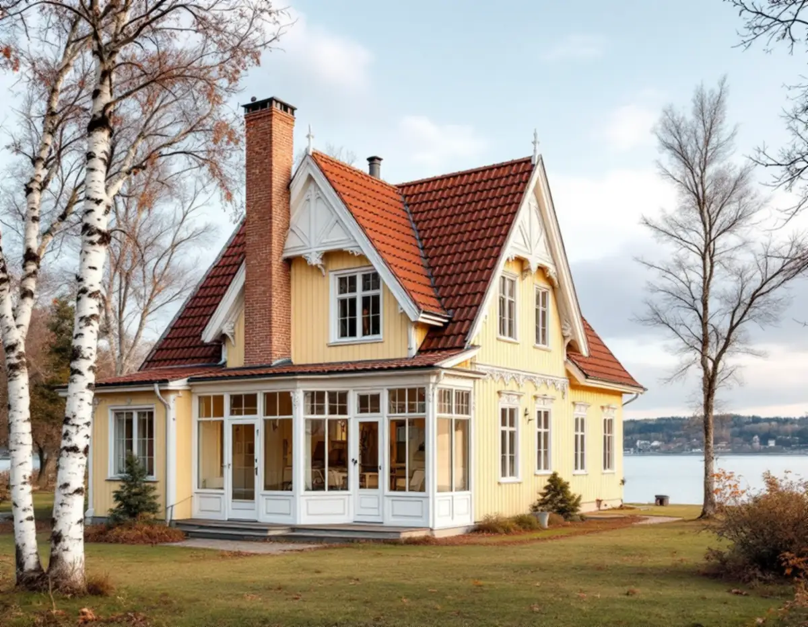
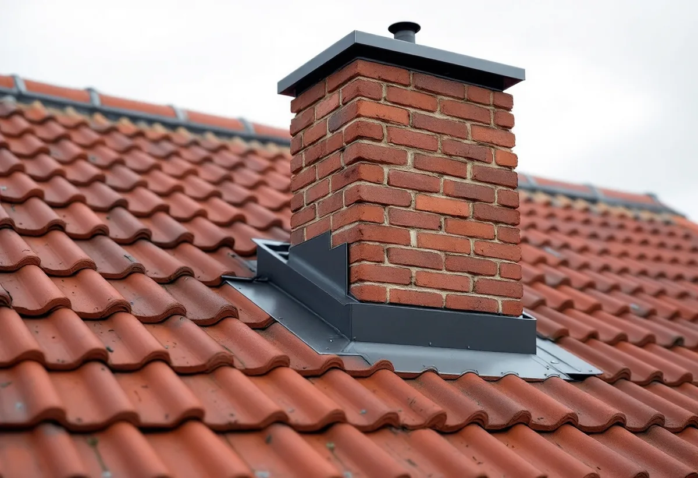

Platsbesök
Vi tittar på skorstenen ovan tak, beslaget och vinden intill murstocken.
Från sommarnöjena vid Magelungen till småstugorna i Tallkrogen har många hus i Farsta en skorsten, och där skorstenen går genom taket sitter ett av takets mest utsatta plåtbeslag. Geal Entreprenad AB har egna plåtslagare som byter skorstensbeslag, klär in skorstenskronor och lägger plåt på tak i Farsta, med gratis platsbesök och skriftligt kostnadsförslag.

Stadsmuseets Stockholms Spår om Farsta strand berättar att AB Södertörns villastad vid sekelskiftet lockade med frisk luft och vacker natur när den lantliga trakten skulle bebyggas med villor, och att Nynäsbanan som öppnade 1901 gjorde det lättare att nå staden. Längs stranden mot Magelungen ligger bland annat en gulmålad villa från 1910 och flera gamla sommarnöjen, däribland Ateljéhuset med sin snickarglädje.
Stadens vägledning Varsam utveckling av småhus- och villaområden räknar Tallkrogen, delar av Svedmyra och delar av Sköndal till stadens småstugeområden. I de senare utbyggnadsfaserna är taken i huvudsak flacka sadeltak, och taken var täckta med enkupigt eller tvåkupigt rött lertegel. Farsta centrum invigdes 1960, och enligt Stockholms Spår lades flera stora radhusområden i stadsdelens utkanter.
Tre helt olika hustyper alltså. Har huset kvar en skorsten är frågorna kring den ändå desamma. På en sekelskiftesvilla med branta tak och utsmyckad skorsten är beslaget en detalj som syns, på en småstuga sitter skorstenen ofta mitt på det flacka taket. I båda fallen är plåten runt murstocken det som håller vattnet ute.

Storstockholms brandförsvar ansvarar för att alla aktiva eldstäder i medlemskommunerna sotas och brandskyddskontrolleras, och har avtal med sotningsentreprenörer för olika distrikt. Brandförsvaret skriver att det traditionella sättet att sota, med lina och lod från taket, har ersatts av roterande undertryckssotning som görs nerifrån med stavsystem, och att även brandskyddskontrollen görs nedifrån om sotaren inte kan arbeta säkert från taket.
Vid brandskyddskontrollen inspekteras rökkanalen enligt brandförsvaret både utvändigt i hela sin längd och invändigt med skorstenskamera. Brandförsvaret skriver också att det är fastighetsägaren som ansvarar för att brandskyddet är tillfredsställande och för att sotaren får tillträde, så att tjänsterna kan utföras på ett säkert sätt och i sin helhet.
Har sotaren anmärkt på skorstenen ovan tak, till exempel en sprucken krona eller ett beslag som släppt, är det plåtslagaren och muraren som ska åtgärda det. Vi tar plåtdelen och kan klä in en sliten skorstenskrona i plåt. Behöver själva murstocken lagas finns mer under skorstensrenovering.
Skorstensbeslaget består av flera delar: en framplåt nedanför skorstenen som leder vattnet ut på pannorna, sidoplåtar längs murstocken, en bakre ränna ovanför skorstenen som leder vattnet runt den och en överbleckning mot murverket. Skorsten och tak rör sig olika med temperatur och fukt, och därför ska anslutningen mot murverket tåla rörelse utan att släppa. Ett beslag som har släppt syns ofta först som fuktfläckar på vinden intill murstocken.
På ett flackt sadeltak som på många småstugor rinner vattnet långsammare, och den bakre rännan ovanför skorstenen behöver vara tillräckligt bred för att löv och snö inte ska dämma upp vattnet. På sekelskiftesvillornas branta tak är det i stället farten på vattnet som gör att överlappen mot pannorna måste vara rätt. Vi mäter upp och bockar beslaget efter den skorsten som finns, inte efter ett standardmått. Läcker det redan finns mer under takläckage.
Enligt Stockholms stad behöver du göra en anmälan och invänta startbesked för att installera en eldstad, skorsten eller rökkanal, och för vissa byten av eldstad, till exempel när ett annat bränsleslag ska användas eller när den nya eldstaden kräver förstärkning av bärande konstruktion. En ny utvändig skorsten kan dessutom kräva bygglov som fasadändring, beroende på byggnad och fasad, och ska redovisas på fasadritningar.
Staden rekommenderar att skorstenens utformning och placering planeras i samråd med skorstensfejarmästaren. För plåtslagaren är det placeringen som avgör hur beslaget ska utformas: en skorsten nära nocken får en kort bakre ränna, medan en skorsten långt ner på takfallet tar emot mycket vatten ovanifrån. Allmänt om plåtarbeten finns på sidan plåtslagare.
Vi tittar på skorstenen ovan tak, beslaget och vinden intill murstocken.
Har brandskyddskontrollen noterat brister går vi igenom dem punkt för punkt.
Beslag, skorstenskrona och övrig takplåt redovisas som egna poster.
Beslaget mäts upp på plats och bockas efter skorstenen och takets lutning.
Plåten monteras med rätt överlapp och vi kontrollerar anslutningen mot murverket.
Skatteverket räknar det som rotarbete i ett småhus att mura och reparera skorstenar, att reparera eller byta ut plåttak, hängrännor och stuprör och att montera och montera ner byggnadsställningar i samband med rotarbetet.
Avdraget är 30 procent av arbetskostnaden, högst 50 000 kronor per person och år och högst 75 000 kronor tillsammans med rutavdrag. Material och resor ger inget avdrag. Vi drar avdraget direkt på fakturan.
Takets lutning och höjd, skorstenens storlek och placering, om bara beslaget eller även kronan ska kläs in, om murning behövs och vilken ställning eller takskydd som krävs för att arbeta säkert. Efter ett gratis platsbesök får du ett skriftligt kostnadsförslag.
Plåttak, hängrännor och beslag.
Plåtslagare i Stockholm →Takbyte, takbesiktning och plåtarbeten.
Takläggare i Farsta →Småstugor, kulturmiljö och gränser.
Attefallshus i Farsta →ABC-staden, radhus och asbest i våtrummet.
Badrumsrenovering i Farsta →En ny bostad i villan.
Byggföretag i Farsta →Tegel, puts, skivor och trädetaljer.
Fasadmålning i Farsta →Radhus, grupphus och fasadskivor.
Fasadrenovering i Farsta →Småstugor och radhus.
Fönsterbyte i Farsta →Småstugorna i Svedmyra och Sköndal.
Fönsterrenovering i Farsta →Linoleum, plastgolv och klinker i småstugan.
Golvläggare i Farsta →Slipa trägolvet och gå igenom resultatet.
Golvslipning i Farsta →ABC-staden, radhus och villor.
Köksrenovering i Farsta →Småstugor, ädelputs och radhus i Söderort.
Målare i Farsta →Förråd, gäststuga och skärmtak vid småstugan.
Snickare i Farsta →Radhusen, längan och föreningen.
Takbyte i Farsta →Tapet i 1960-talets lägenheter.
Tapetsering i Farsta →Småstugorna och typritningarna.
Totalrenovering i Farsta →